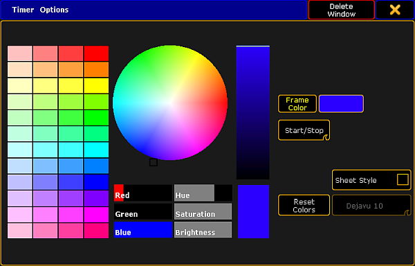

To open the options of the timer pool, tap the in the upper left corner of the pool.
The option dialog opens.

Setting the options of the timer pool
To adjust the general settings such as the frame color, sheet style, font or the reset of colors, see Adjust pool options.
To start or pause the timer directly in the pool, swipe the button Select to Start / Stop.
-To start the timer, tap the pool object once.
-To pause it, tap it once again.
Hint:
If you swipe the button back to Select, tapping the timer in the timer pool selects it.